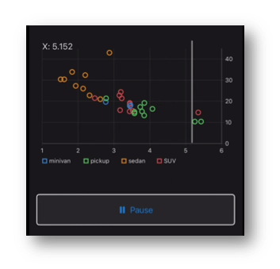
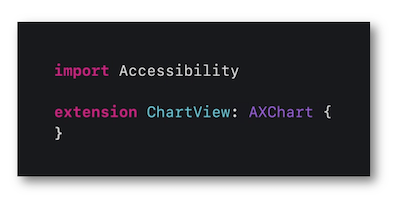

WWDC 2021 : Incorporer efficacement l'accessibilité à vos graphes
Cette présentation visualisable sur le site développeur officiel d'Apple (session 122) explique comment implémenter l'accessibilité pour la présentation de graphes en introduisant une nouveauté iOS 15 pour VoiceOver de façon très détaillée.

Les thèmes abordés ainsi que leur référence temporelle au sein de la vidéo sont décrits ci-dessous :
-
Présentation (01:29)
-
Implémentation classique (10:22)
-
Implémentation du graphe audio (14:17) ⟹ nouveauté iOS 15
Présentation (01:29) #
L'idée de cette nouvelle fonctionnalité iOS 15 réside dans l'introduction d'une sonorisation à intensité variable pour indiquer les écarts de valeurs sur un graphe de façon auditive.
Le premier exemple s'articule autour d'un graphe représentant des données sous forme de courbes.
Le second exemple met en avant le traitement graphique d'un nuage de points optimisé pour VoiceOver afin de favoriser la compréhension vocale des données ainsi exposées.

Des éléments explicatifs sur le contenu du graphe sont ajoutés en bas d'écran lors de l'activation de cette fonctionnalité.
Outre le fait de se mettre à la portée de tous, incorporer l'accessibilité à la présentation d'un graphe avec cette nouvelle fonctionnalité apporte une granularité encore plus fine à l'exploitation auditive des données présentées.

Critères de conception en accessibilité visuelle (06:44) #
Afin de rendre le visuel d'un graphique le plus accessible possible, des critères importants sont exposés et expliqués avec des exemples concrets pour mieux percevoir leur efficacité.
-
Respecter les seuils de contraste entre les couleurs¬†‚üπ¬†üé¨
-
√âviter l'utilisation concomitante du rouge et du vert¬†‚üπ¬†üé¨
-
√âviter l'utilisation simultan√©e du bleu et du jaune¬†‚üπ¬†üé¨
-
Utiliser des symboles pour que la couleur ne soit pas le seul canal de transmission d‚Äôune information¬†‚üπ¬†üé¨
-
Limiter au maximum la transparence¬†‚üπ¬†üé¨
Pour plus d'informations sur ces points, l'ensemble des critères de conception incluant les options d'accessibilité sont disponibles dans la section homonyme iOS de ce site.
Implémentation classique (10:22) #
Un histogramme sans complexités particulières va servir de socle pour l'exemple d'implémentation basique de VoiceOver.

Les grandes lignes à suivre peuvent se résumer de la façon suivante :
-
assimiler le graphe à un
containerqui aidera VoiceOver dans son analyse des données à vocaliser, -
fournir un label explicatif qui permettra d'identifer parfaitement le graphe dès qu'il sera sélectionné,
-
créer un élément accessible associé à chaque barre dont la donnée graphique doit être vocalisée.

En suivant cette logique, le rendu final est optimisé et parfaitement compréhensible par un utilisateur VoiceOver.
Implémentation du graphe audio (14:17) #
L'exemple précédent de l'histogramme est repris en y ajoutant quelques propriétés pour mettre en avant l'implémentation de cette nouvelle fonctionnalité iOS 15.

Toute la mécanique de fonctionnement est apportée par le framework Accessibility (disponible depuis iOS 14) qui fournit la source de cette nouveauté, le protocole AXChart.

La seule étape à suivre s'appuie sur la parfaite description de la propriété accessibilityChartDescriptor en définissant :
-
les axes
AXNumericDataAxisDescriptorà l'aide des éléments fournis dans le modèle de données, -
l'ensemble des données à afficher sous forme de
AXDataSeriesDescriptor, -
retournant l'
initializerapproprié qui reprend les définitions réalisées dans les étapes précédentes et qui inclue l'élémentSummaryaffiché en bas d'écran.

Ces différentes étapes vont permettre d'introduire une sonorisation à intensité variable pour indiquer les écarts de valeurs de façon auditive pour ce graphe.